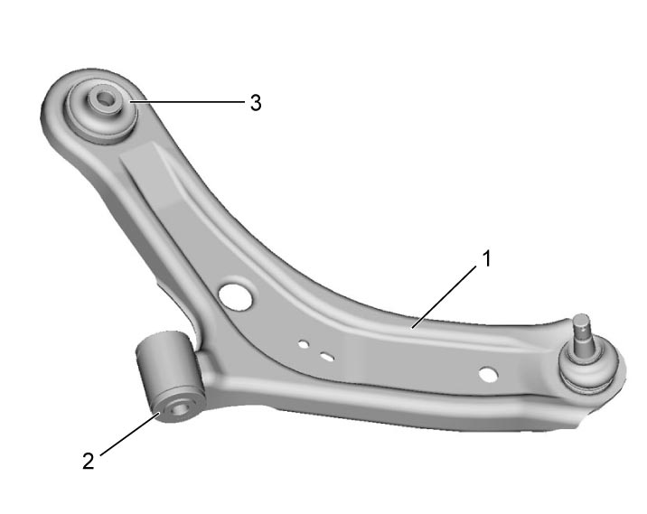
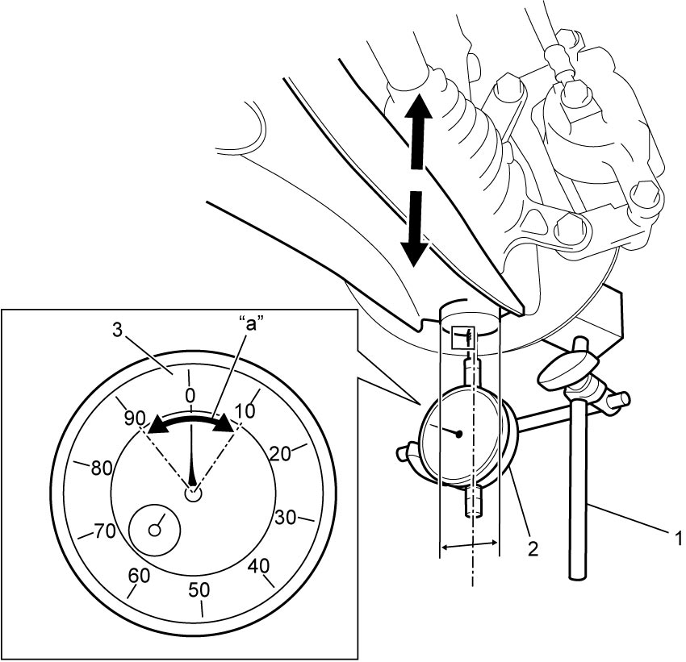
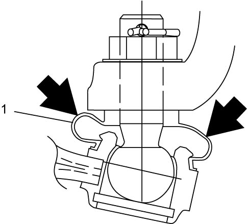
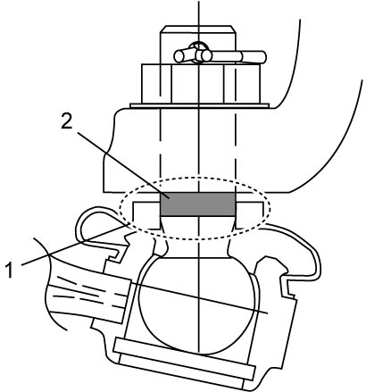
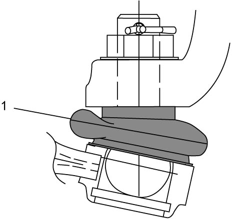
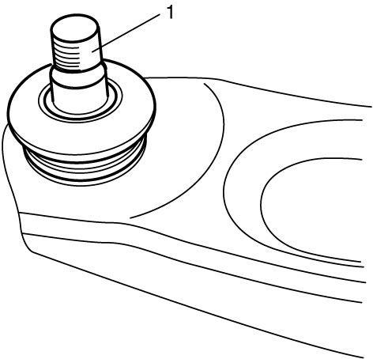

2B
| Suspension Arm Check |
Arm
Check body of suspension arm (1) for damage and deterioration. Replace suspension arm if check result is not OK.
Bushing
Check suspension arm front bushing (2) for damage, wear and deterioration. Replace bushing if check result is not OK.
Check suspension arm rear bushing (3) for damage, wear and deterioration. Replace suspension arm assembly if check result is not OK.

 "Expand image")
Joint
1)Remove front wheel. 
2)Set dial gauge (2) using magnetic stand (1) placed on front brake disc.
NOTE:
Apply measuring tip of dial gauge perpendicular to bottom center surface of ball joint as much as possible.
3)Set pointer to 0 (zero) by turning dial (3).
4)Push suspension arm up at near ball joint by hand with force of about 20 to 30 N (2.0 to 3.1 kgf, 4.5 to 6.7 lbf) and hold this state for 2 to 3 seconds, and then read dial gauge.
5)Reversing direction of force, pull suspension arm down at near ball joint by hand with force of about 20 to 30 N (2.0 to 3.1 kgf, 4.5 to 6.7 lbf) and hold this state for 2 to 3 seconds, and then read dial gauge.
6)Check total “a” of readings in Step 4) – 5), amount of looseness.
If measured looseness exceeds specified range, replace suspension arm.

If measured looseness exceeds specified range, replace suspension arm.
Amount of looseness in suspension arm ball joint
“a”: less than 0.2 mm (0.008 in.)

 "Expand image")
7)Lightly push ball joint dust cover (1) with fingers to check whether there is water inside.
If water is found to come out, replace suspension arm.
If water is found to come out, replace suspension arm.

 "Expand image")
8)Push top end (1) of ball joint dust cover down to check for rust on ball stud's surface (2) in contact with dust cover.
If surface is found rusted, replace suspension arm.
If surface is found rusted, replace suspension arm.

 "Expand image")
9)Move top end of ball joint dust cover back to original position.
10)Check ball joint dust cover (1) for crack and damage.
If it is cracked or otherwise damaged, replace suspension arm.
If it is cracked or otherwise damaged, replace suspension arm.

 "Expand image")
11)Detach ball joint stud from steering knuckle.
12)Check that ball joint stud (1) moves without sticking.
If not, replace suspension arm.
If not, replace suspension arm.

 "Expand image")
13)Connect suspension arm ball joint stud to steering knuckle.
14)Install front wheel and tighten wheel bolts to specified torque.